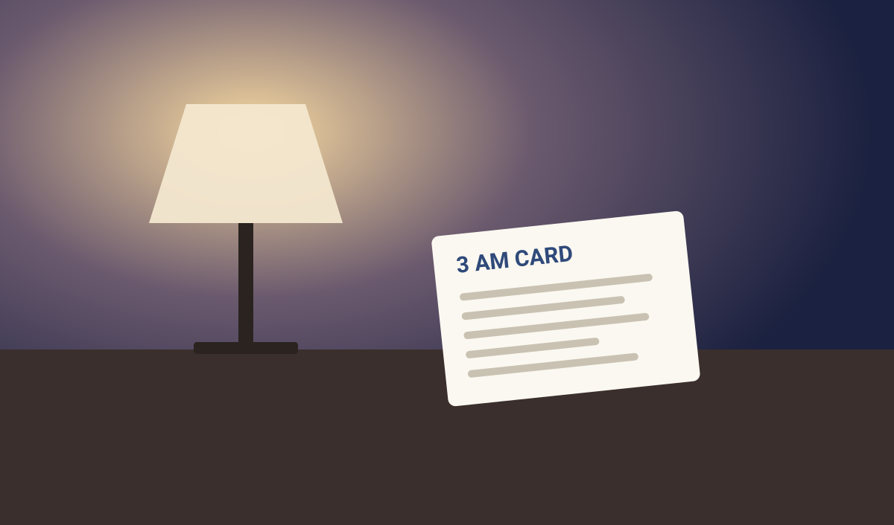

A Plan for Tonight. A Card for 3 AM.
The 3 AM Wake-Up Fix is a 7-night system for people who fall asleep fine and wake up at 3 AM. Set it up in 15 minutes tonight.

Get the guide for $7Two parts, built for two moments
- Before bed: a 15-minute Tonight page with eight checkboxes, plus an Evening Timing Planner for caffeine, meal, fluid, and alcohol cutoffs.
- At 3 AM: a printable card for your nightstand with eight steps, a "20-minute rule" that works without a clock, and five in-bed tools.
- Over 7 nights: a tracker, and an "If you see this, try this" table covering eleven patterns.
- Not a course or a supplement plan. It's a PDF in 8 short steps that takes about 30 minutes to read.
One-time price of $7. You get the PDF right away. An optional $17 "3 AM Toolkit" is offered at checkout, and you can skip it. No subscription. If the guide isn't worth $7 to you, reply to your receipt email for a refund and keep the guide. Sold by Sleep Smarter, not by this site.
Why a stack, not a single tip
The guide frames 3 AM waking as a stack of small causes: evening eating and drinking, unresolved daytime stress, and a bedroom that's too warm, bright, or noisy. Its 19-question Suspects Checklist and decision tree help you work out which ones apply to you.
Everything included
- A 15-minute Tonight page with eight pre-bed checkboxes
- A printable 3 AM Card for your nightstand, with eight steps
- A 3 AM Suspects Checklist: 19 yes-or-no questions and a decision tree
- An Evening Timing Planner for caffeine, meal, fluid, and alcohol cutoffs
- A 3 AM snack decision tree, including options under 200 calories
- A "20-minute rule" that works without looking at a clock
- Five in-bed tools: 4-7-8 breathing, cognitive shuffling, a muscle release, a foot trick, and 5-4-3-2-1 grounding
- A 10-minute bedroom audit, with fixes sorted by cost: free, under about $50, and later
- A 90-minute Wind-Down Schedule and a "Worry Park" sheet
- Morning-After Rules and a 7-night tracker
- An "If you see this, try this" table covering eleven tracker patterns
- A clear list of when to see a doctor
A note on safety. This guide is not medical advice. If you snore heavily, gasp or stop breathing in your sleep, or have ongoing insomnia, talk to a doctor. The guide includes a list of when to see one.
Get the guide for $7